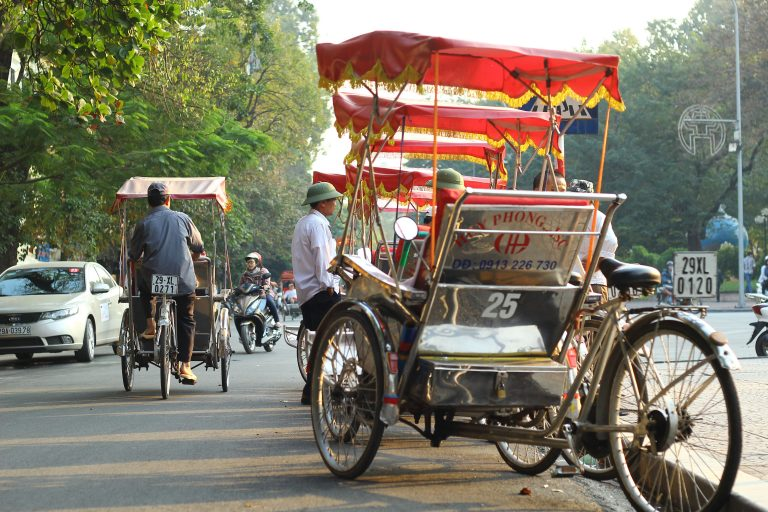

Hà Nội có gì mà khiến bao người một lần đặt chân đến đây đều say đắm, mê mẩn? Cùng tìm hiểu “tất tần tật” những kinh nghiệm du lịch Hà Nội tự túc qua cẩm nang chi tiết dưới đây để tìm cho mình lời giải đáp nhé!
Thời gian để tới Hà Nội đẹp nhất là vào mùa thu, khoảng độ từ tháng 8, tháng 9, tháng 10. Trong đó lý tưởng nhất nên đến Hà Nội vào tháng 9 hay tháng 10. Vì khi này, mùa mưa ở Hà Nội thường đã kết thúc. Trời tạnh ráo, ánh nắng không quá gắt. Nhiệt độ ở mức trung bình, không khí mát mẻ. Tất cả các yếu tố thời tiết trên tạo điều kiện tốt nhất để du khách có một hành trình khám phá Hà Nội tuyệt vời nhất.
Còn nếu với những du khách ưa thích không khí lạnh, có phần buốt rét, thì những tháng cuối năm như tháng 11, tháng 12 sẽ là một gợi ý không tệ để du lịch tham quan Hà Nội. Đến Hà Nội vào khoảng thời gian này, bên cạnh việc tham quan các địa điểm du lịch nổi tiếng, du khách còn có thể thưởng thức nhiều món ăn đặc sản mùa đông ngon ở Hà Nội.
+ Nếu như ở xa và kinh phí dư dả thì máy bay là phương tiện di chuyển đến Hà Nội thích hợp nhất. Hoặc không bạn có thể lựa chọn tàu hỏa để tiết kiệm chi phí cũng như thuận tiện ghé thăm các điểm du lịch khác trên đường.
+ Còn nếu ở các tỉnh thành lân cận, cách Hà Nội không quá xa thì bạn có thể lựa chọn tới thủ đô bằng xe khách hoặc xe máy. Đặc biệt xe máy là phương tiện được nhiều người lựa chọn nhất bởi nó không chỉ tiết kiệm mà còn mang lại nhiều cảm giác thú vị.
Đến Hà Nội du lịch các bạn có thể tham quan bằng một số loại phương tiện phổ biến sau:
Xe máy: Bạn có thể tự mình khám phá thành phố bằng cách thuê xe máy hoặc gọi grab. Giá thuê xe máy ở đây vào khoảng từ 50k - 200k/ngày tùy vào loại xe máy hay xe ga.
Taxi: Nếu đi đông người bạn có thể lựa chọn taxi. Mặc dù giá khá cao, tuy nhiên phương tiện này sẽ giúp bạn đến bất cứ địa điểm nào bạn muốn một cách an toàn và nhanh chóng.
Xe xích lô: Bạn có thể di chuyển bằng xích lô để đi thăm khu phố cổ. Đa phần khách du lịch đến đây đều chọn xích lô để di chuyển đến các điểm du lịch ở Hà Nội. Bạn có thể trực tiếp gọi xe bởi ở khu vực bờ hồ, số lượng xe xích lô rất nhiều.
Xe bus: Đây là loại phương tiện công cộng cực kỳ quen thuộc với người dân cũng như du khách khi đến với Hà Nội. Giá vé cho mỗi chuyến khá rẻ, chỉ 7.000 – 9.000đ.